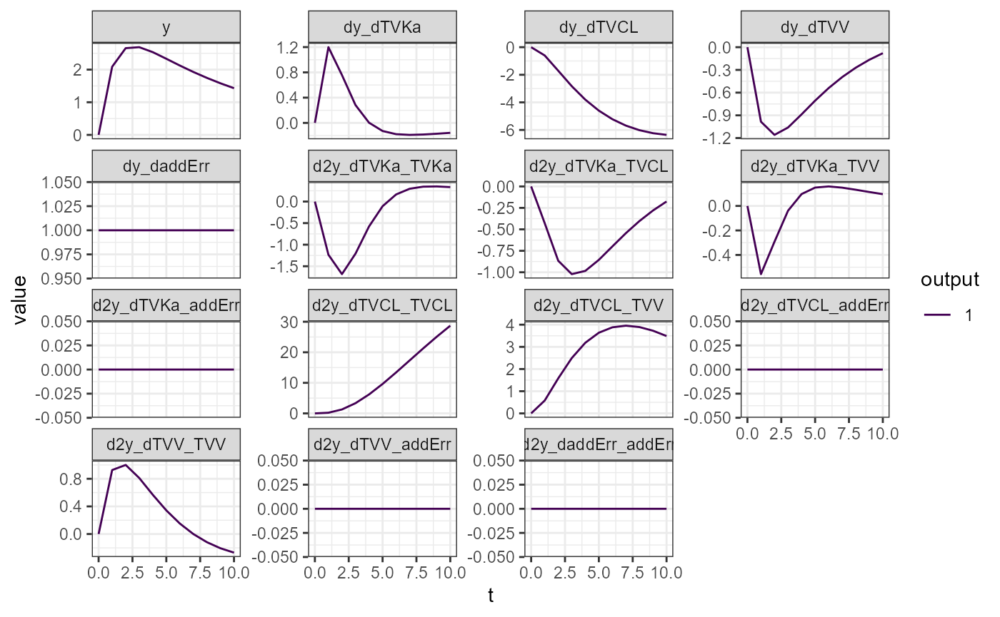
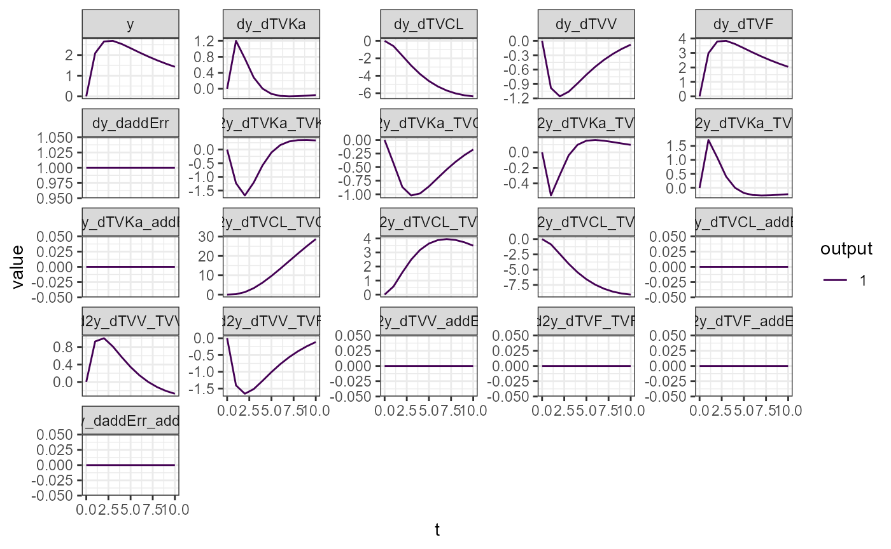
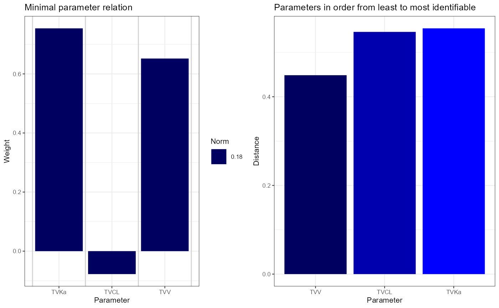
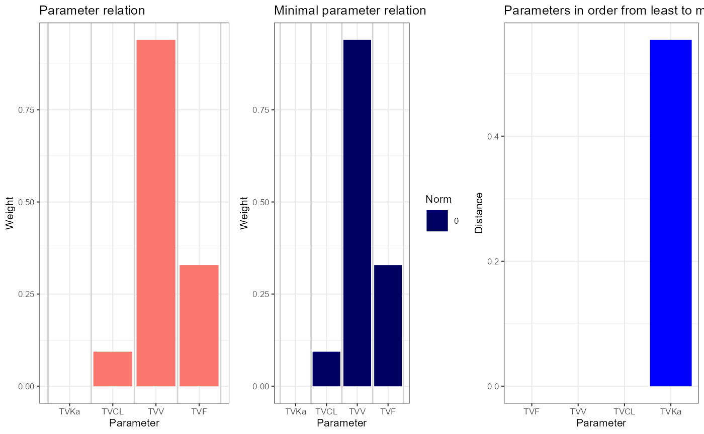
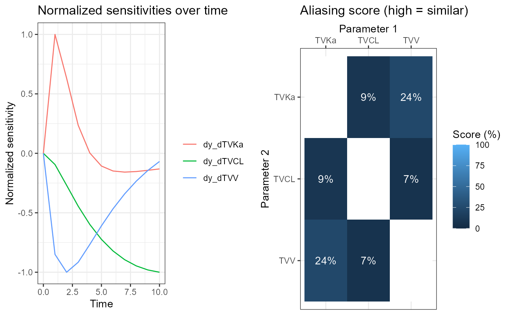
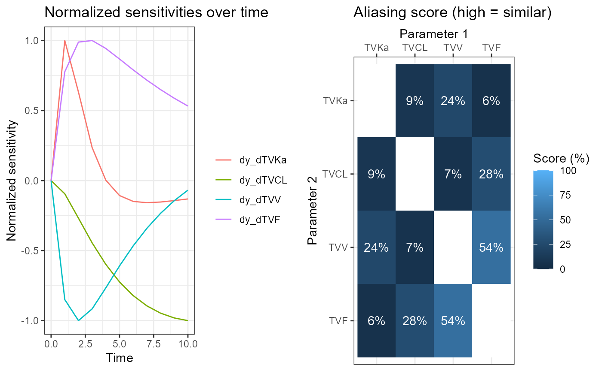

parid.Rmd
library(parid)
#> Loading required package: ggplot2
#> parid, version 1.0, (C) 2023 LAP&P Consultants BV. See COPYING for license infoThis is an example showing how to use the parid package. The example defines a nonlinear mixed effects model, and analyzes its parameter identifiability using three methods:
This example assumes familiarity with mixed effects modeling. More details on the methods and on parameter identifiability in general can be found here. R code running this same example can be found in the package, at tests/example.R.
The model is a one-compartmental linear PK model with absorption and a single oral dose. The model parameters are clearance (CL), volume (V), the absorption rate constant (Ka) and optionally the bio-availability (F); they are defined in terms of underlying structural and inter-individual parameters. In this example, inter-individual variability is included on clearance. The output is the concentration, which is modeled with an additive error.
The expected outcome is that this model will not be identifiable because the bio-availability cannot be determined independently from the clearance and volume. If the bio-availability is fixed, then the model should be identifiable.
The next lines of code create four functions defining this model:
model: returns the differential equations describing
the time evolution of the model. The input arguments are the time
t, the current state y (i.e., the amounts in
the depot and central compartments), and the model parameters
p.p: returns the model parameters as function of the
structural parameters theta and inter-individual parameters
eta. The dose is also included here. In general, any
covariates could be included. For all parameters except CL, the value is
simply the value of the corresponding structural parameter.init: returns the initial values of the state
variables, as function of the model parameters p. In this
example, the depot is initialized to the bio-available fraction of the
dose, and the central compartment to zero.output: returns the model output, that is the
concentration (with residual error), as function of the state
y, the model parameters p and the residual
error eps.
model <- function(t, y, p) { c(-p[["Ka"]]*y[["x1"]], p[["Ka"]]*y[["x1"]] - p[["CL"]]/p[["V"]] * y[["x2"]]) }
p <- function(theta, eta) { c(Ka = theta[["TVKa"]], CL = theta[["TVCL"]] * exp(eta[["iCL"]]),
V = theta[["TVV"]], F = theta[["TVF"]], Dose = theta[["TVDose"]]) }
init <- function(p) { c("x1" = p[["F"]] * p[["Dose"]], "x2" = 0) }
output <- function(y, p, eps) { y[["x2"]] / p[["V"]] + eps[["addErr"]] }The next piece of code sets the values for the structural parameters
(theta). Some parameters can be considered as fixed. This
is typically done for covariates (in this example the dose). The vectors
vartheta1 and vartheta2 define two variants;
the first one also sets the bio-availability F as fixed, the second one
keeps it variable.
Variance matrices omega and sigma are
defined for the random variables eta and eps,
respectively. Their row and column names should be the same as the ones
used in the model definition. These matrices are the random-effects
parameters.
theta <- c("TVKa" = 1, "TVCL" = 0.2, "TVV" = 2, "TVF" = 0.7, "TVDose" = 10)
vartheta1 <- setdiff(names(theta), c("TVDose", "TVF")) # Bioavailability F is fixed
vartheta2 <- setdiff(names(theta), "TVDose") # Bioavailability F is variable
omega <- diag(0.3, nrow = 1)
colnames(omega) <- row.names(omega) <- c("iCL")
sigma <- diag(0.1, nrow = 1)
colnames(sigma) <- row.names(sigma) <- c("addErr")The vector times contains the sampling times. The
initialization (in this example, the time of dosing) is always set to
zero.
times <- seq(0, 10, 1)As a first step in the calculation, the variational equations are
solved. This is done two times, once for every setting of fixed
parameters as defined above, and will create data frames
vareq1 and vareq2 containing the derivatives
of the model output (the concentration) with respect to the structural
and random-effects parameters, evaluated at the sample times. The
derivatives are plotted over time. The plot functions have options
controlling which derivatives are plotted. See their documentation for
details.
vareq1 <- calcVariationsFim(model = model, p = p, init = init, output = output, times = times, symbolic = TRUE,
theta = theta, nmeta = colnames(omega), nmeps = colnames(sigma), vartheta = vartheta1)
plotVariations(vareq1)
vareq2 <- calcVariationsFim(model = model, p = p, init = init, output = output, times = times, symbolic = TRUE,
theta = theta, nmeta = colnames(omega), nmeps = colnames(sigma), vartheta = vartheta2)
plotVariations(vareq2)
SMM results are generated from the variational matrices
vareq1 and vareq2 using the function
calcSensitivityFromMatrix. The outputs
argument controls which SMM indicators are computed. They are (more details):
N. This is a categorical
indicator, equal to the number of unidentifiable directions. So 0 means
identifiable, and larger than 0 means unidentifiable.A. This is a continuous indicator,
taking values between 0 and 1, where 0 means unidentifiable, 1 means
identifiable. If A is close to 0 then the model is close to
unidentifiable.R. This lists the
parameter directions in which the model is unidentifiable. The number of
directions equals N.M and the M-norm given
by its norm attribute. The M-norm is a continuous
indicator, taking values between 0 and 1, where 0 means unidentifiable,
1 means identifiable. If the M-norm is close to 0 then the model is
close to unidentifiable. For small M-norms, the vector M
contains the parameter direction in which the model is
unidentifiable.L.
This is a vector of continuous indicators, one for each parameter,
taking values between 0 and 1, where 0 means unidentifiable, 1 means
identifiable. If a component of L is close to 0 then that
parameter is close to unidentifiable.The results are displayed and graphed. The first variant, where the
bio-availability F was fixed, is identifiable, as can be seen from the
output of simplifySensitivities(sens1): the null space
dimension N is 0, and the skewing angle, M-norm and L-norms
are all large.
sens1 <- calcSensitivityFromMatrix(outputs = list("N", "A", "R", "M", "L"), df = vareq1, vars = vartheta1)
simplifySensitivities(sens1)
#> $N
#> [1] 0
#>
#> $A
#> [1] 0.6668127
#>
#> $R
#>
#> TVKa
#> TVCL
#> TVV
#>
#> $M
#> [,1]
#> TVKa 0.75420019
#> TVCL -0.07767148
#> TVV 0.65203467
#> attr(,"norm")
#> [1] 0.1814101
#>
#> $L
#> TVV TVCL TVKa
#> 0.4485372 0.5462389 0.5542248
plsens1 <- plotSensitivities(sens1)
plsens1 <- lapply(plsens1[lengths(plsens1) > 0], function(pl) pl + theme_bw(base_size = 8))
cowplot::plot_grid(plotlist = plsens1, nrow = 1)
The second variant, where F was variable, is not identifiable, see
the output of simplifySensitivities(sens2): the null space
dimension is 1, and the skewing angle, M-norm and L-norms are all small
or even zero. The indicators R and M find a
relation involving F, CL and V, as expected.
sens2 <- calcSensitivityFromMatrix(outputs = list("N", "A", "R", "M", "L"), df = vareq2, vars = vartheta2)
simplifySensitivities(sens2)
#> $N
#> [1] 1
#>
#> $A
#> [1] 0.002006091
#>
#> $R
#> [,1]
#> TVKa 0.0000000
#> TVCL 0.0939682
#> TVV 0.9396820
#> TVF 0.3288887
#>
#> $M
#> [,1]
#> TVKa 0.0000000
#> TVCL 0.0939682
#> TVV 0.9396820
#> TVF 0.3288887
#> attr(,"norm")
#> [1] 0
#>
#> $L
#> TVF TVV TVCL TVKa
#> 0.0000000 0.0000000 0.0000000 0.5542248
plsens2 <- plotSensitivities(sens2)
plsens2 <- lapply(plsens2[lengths(plsens2) > 0], function(pl) pl + theme_bw(base_size = 8))
cowplot::plot_grid(plotlist = plsens2, nrow = 1)
The results are generated from the variational matrices
vareq1 and vareq2 using the function
calcAliasingFromMatrix. The results are displayed and
graphed. Both variants are identifiable, as aliasing scores are quite
low. This is because the aliasing method can only find identifiability
problems involving two parameters, and not three.
alia1 <- calcAliasingScoresFromMatrix(df = vareq1, vars = vartheta1)
plalia1 <- plotAliasing(alia1, elt = c("S", "T"))
cowplot::plot_grid(plotlist = plalia1, nrow = 1)
alia2 <- calcAliasingScoresFromMatrix(df = vareq2, vars = vartheta2)
plalia2 <- plotAliasing(alia2, elt = c("S", "T"))
cowplot::plot_grid(plotlist = plalia2, nrow = 1)
FIMM results are generated from the variational matrices
vareq1 and vareq2 using the functions
calcFimFromMatrix and fimIdent, that compute
the Fisher Information Matrix (FIM) and the parameter identifiability
indicators, respectively. The indicators are (more details):
identifiable. This is
TRUE if all curvatures are 0 and the model is identifiable,
and FALSE if there are positive curvatures and the model is
unidentifiable. The curvatures describe the objective function value
(OFV) surface as function of the parameters.nDirections. This is a
categorical indicator counting the number of 0 curvatures.directions corresponding to the
curvatures, in order of increasing curvature. For zero (or small)
curvatures, they indicate the directions in parameter space of (near)
unidentifiability.curvatures of the OFV surface.
Zero values correspond to unidentifiability, small values indicate near
unidentifiability.jump of the highest change in curvature
value.se, calculated from the
FIM.rse, calculated
from the FIM.The results are displayed. The first variant, where the
bio-availability F was fixed, is identifiable: all curvatures are high.
The options relChanges = TRUE and ci = 0.95
imply that the directions show the relative percentage
changes corresponding to an insignificant increase (at 95%) in objective
function of at most 3.84, for the given number of subjects. They are all
below 50%.
fim1 <- calcFimFromMatrix(df = vareq1, omega = omega, sigma = sigma, vartheta = vartheta1)
fimres1 <- fimIdent(fim = fim1, curvature = 1e-10, relChanges = TRUE, ci = 0.95, nsubj = 30)
simplifyFimIdent(fimres1)
#> $identifiable
#> [1] TRUE
#>
#> $nDirections
#> [1] 0
#>
#> $directions
#> [,1] [,2] [,3] [,4] [,5]
#> TVKa 9.9061084 -8.6678631 -2.9435682 -0.12214659 0.00000
#> TVCL -6.0881243 -0.3264183 0.1793294 -16.80599830 0.00000
#> TVV 4.0494263 -3.0153337 1.9606156 -0.03457756 0.00000
#> iCL 45.2711270 33.0420632 -0.6269551 -0.57003282 0.00000
#> addErr -0.1127873 -0.1378980 0.0251975 0.05610669 16.00194
#>
#> $curvatures
#> [1] 109.8634 183.1313 1595.4680 3385.5471 15002.0161
#>
#> $jump
#> [1] 2
#>
#> $se
#> TVKa TVCL TVV iCL addErr
#> 0.37694626 0.09992565 0.30271768 0.46993184 0.04472136
#>
#> $rse
#> TVKa TVCL TVV iCL addErr
#> 37.69463 49.96282 15.13588 156.64395 44.72136The second variant, where F was variable, is not identifiable, as the
first curvature is close to zero. It finds a relation involving F, CL
and V in directions, as expected. The relative changes are
very large, indicating that the parameters can change by a large factor
without significantly changing the OFV.
fim2 <- calcFimFromMatrix(df = vareq2, omega = omega, sigma = sigma, vartheta = vartheta2)
fimres2 <- fimIdent(fim = fim2, curvature = 1e-10, relChanges = TRUE, ci = 0.95, nsubj = 30)
#> Warning in FisherInfo::fimIdent: SE's and RSE's cannot be calculated because FIM cannot be inverted. I will set them to NA, and continue without them.
simplifyFimIdent(fimres2)
#> $identifiable
#> [1] FALSE
#>
#> $nDirections
#> [1] 1
#>
#> $directions
#> [,1] [,2] [,3] [,4] [,5] [,6]
#> TVKa 0 7.0481967 11.48509526 -0.47008081 -0.36997026 0.00000
#> TVCL -70517721 -8.4600755 -4.92646955 -16.70180859 1.37943161 0.00000
#> TVV -70517721 0.3837179 0.44188540 0.21666273 0.28984508 0.00000
#> TVF -70517721 -2.4417729 -3.20506697 -0.40526242 -2.47868897 0.00000
#> iCL 0 52.9879893 -18.27022014 -0.66179776 -0.07046264 0.00000
#> addErr 0 -0.1496521 0.09507588 0.06271155 0.06099013 -16.00182
#>
#> $curvatures
#> [1] 1.705303e-12 1.244213e+02 2.276623e+02 3.287036e+03 1.079053e+04
#> [6] 1.500206e+04
#>
#> $jump
#> [1] 1
#>
#> $se
#> TVKa TVCL TVV TVF iCL addErr
#> NA NA NA NA NA NA
#>
#> $rse
#> TVKa TVCL TVV TVF iCL addErr
#> NA NA NA NA NA NA